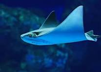

Discover one of the ocean's most interesting animals
Stingrays are marine animals that are closely related to sharks. They are cartilaginous fish, meaning that their skeletons are made mostly of cartilage instead of bone.
Stingrays have flat bodies and large, wing-like fins which they use to move through the water. They can be found in oceans around the world, especially in warm coastal waters.
Stingrays are related to sharks because both belong to a group of fish with skeletons made from cartilage.
Different stingray species can vary greatly in size. Some are relatively small, while others can have very large wingspans.
Many stingrays eat animals such as small fish, crabs, shrimp, worms and other creatures that live on the seafloor.
Stingrays use their large fins to glide or flap through the water.
Stingrays have several adaptations that help them survive in their environment.
Stingrays live in many different marine environments. Many species are found in shallow coastal waters, while others live in deeper parts of the ocean.
They can often be found around sandy or muddy seafloors, coral reefs, estuaries and other coastal habitats.
Stingrays are an important part of marine ecosystems. They help control populations of animals that live on the seafloor and are also part of the food web.
Learning about stingrays helps us understand the importance of protecting marine environments and the animals that live in them.
